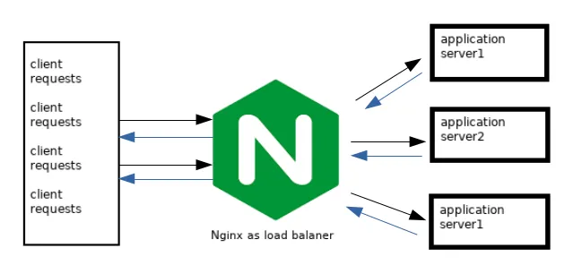
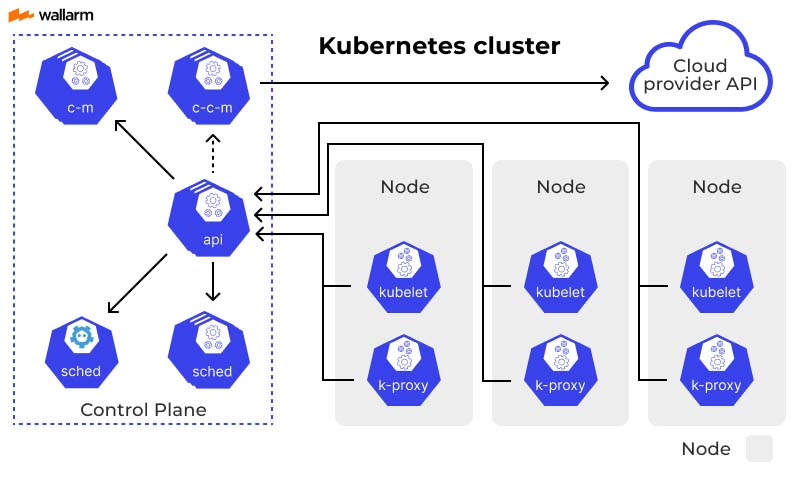

Desarrollo del proyecto
Herramientas empleadas
Load Balancer (balanceador de cargas)
El concepto de balanceador de cargas (Load Balancer) utilizado en la administración de sistemas informáticos que consiste en distribuir un conjunto de peticiones o tareas entre diversos recursos, como computadoras, procesadores u otros dispositivos, para equilibrar la carga de trabajo. Esto se logra mediante distintos algoritmos que determinan la forma de reparto de las solicitudes, y en este caso se ha optado por el algoritmo Round Robin.
El método Round Robin es un algoritmo de planificación simple y justo, empleado tanto en sistemas operativos como en diversas aplicaciones, para gestionar la ejecución de procesos o tareas. Su funcionamiento se basa en asignar a cada recurso un intervalo de tiempo, denominado quantum, de manera cíclica. Por ejemplo, si el quantum es de 10 milisegundos, y consideramos tres tareas identificadas como A, B y C, la tarea A se ejecutará durante los primeros 10 ms, luego la tarea B, después la tarea C y, una vez concluido el ciclo, se vuelve a comenzar con la tarea A. Si alguna tarea no se completa durante su quantum, se reubica al final de la cola para recibir otro segmento de tiempo en futuras iteraciones. Este enfoque garantiza que todas las tareas obtengan una parte equitativa de los recursos del sistema, evitando que alguna monopolice la CPU de forma indefinida.
Ingress
El Ingress en un clúster de Kubernetes es un recurso que administra el acceso externo a los servicios internos, especialmente para tráfico HTTP y HTTPS. Su funcionamiento se puede resumir en los siguientes puntos:
- Define reglas: basadas en dominios (hosts) y rutas (paths) para dirigir el tráfico a servicios específicos dentro del clúster.
- Controlador de Ingress: Para que tenga efecto el recurso ingress, se requieren de controladores como el de NGINX, para interpretar y aplicar las reglas definidas en el recurso ingress.
- Balanceo de carga y seguridad: El controlador actúa como un balanceador de carga y puede manejar aspectos de seguridad como certificados TLS, redireccionamientos y reescrituras de URLs.
- Flexibilidad en la configuración: Permite centralizar la gestión del tráfico entrante sin necesidad de exponer directamente cada servicio, facilitando la administración y la escalabilidad.
- Rendimiento: El rendimiento general dependerá del controlador de Ingress utilizado, en este caso se utilizará NGINX permitiendo añadir capas de autenticación, restricciones por IP, o rate-limiting para proteger las APIs.
NGINX
NGINX es uno de los servidores web y balanceadores de carga más populares y versátiles, utilizado tanto para servir contenido web como para distribuir de manera eficiente el tráfico entrante entre múltiples servidores o recursos. Su funcionamiento se basa en los siguientes puntos clave:
- Recepcion y reedireccion de solicitudes
- Monitoreo y alta disponibilidad
- Optimizacion y eficiencia
- Soporte y compatibilidad
- Facilidad de configuración y extensibilidad
NGINX funciona como balanceador de cargas al actuar como intermediario entre los clientes y un conjunto de servidores backend. Su operación se puede describir en los siguientes pasos:
-
Recepción de solicitudes: NGINX escucha las solicitudes entrantes en un puerto específico (por ejemplo, el 80 para HTTP o el 443 para HTTPS).
-
Distribución de la carga: Al recibir una solicitud, NGINX utiliza una estrategia de balanceo de carga para seleccionar el servidor backend al que se dirigirá la petición. Politicas de distribucion de la carga:
- Round Robin: Las solicitudes se distribuyen de manera cíclica y equitativa entre los servidores.
- Least Connections: La solicitud se dirige al servidor con el menor número de conexiones activas.
- IP Hash: Se utiliza la dirección IP del cliente para determinar el servidor, lo que puede ayudar a mantener la persistencia de sesión.
-
Chequeo de salud: Monitoreo continuo del estado de los servidores backend. Si detecta que alguno no está disponible o presenta fallos, evitará enviarle nuevas solicitudes hasta que vuelva a estar operativo, garantizando así la alta disponibilidad del servicio.
-
Procesamiento y respuesta: Una vez que el servidor backend seleccionado procesa la solicitud, NGINX recibe la respuesta y la envía de vuelta al cliente. Este proceso permite distribuir la carga de trabajo de forma eficiente y optimizar el tiempo de respuesta.
-
Optimización y seguridad: Además del balanceo de cargas, NGINX puede ofrecer funcionalidades adicionales como la terminación de conexiones seguras mediante SSL/TLS, caché, y compresión, lo que contribuye a mejorar la eficiencia y seguridad en la gestión del tráfico.

Figura 3: NGINX como balanceador de carga
Kubernetes
Kubernetes es una plataforma de orquestación de contenedores de código abierto diseñada para automatizar el despliegue, la gestión y el escalado de aplicaciones en contenedores.
Para este proyecto se utilizo el entorno de Minikube en donde se permite desplegar un cluster de kubernetes dentro de un entorno local, ideal para el desarrollo y las pruebas.Como ventaja, proporciona una forma sencilla de experimentar con k8s sin la necesidad de desplegar una infraestructura completa, ademas de consumir menos recursos.
Para ello se instala el entorno minikube configurando un cluster ligero en nuestra PC, funcionando tanto en maquinas virtuales como (virtual Box, kvm, VMware, etc) o en contenedores como Docker.
Requisitos de hardware minimos para usar Minikube
Sistema Operativo Compatible: Minikube es compatible con Linux, macOS y Windows.
Memoria RAM: Se recomiendan al menos 2 GB de RAM para ejecutar el clúster, aunque para un rendimiento más fluido es aconsejable contar con 4 GB o más.
Procesador (CPU): Se sugiere disponer de al menos 2 núcleos de CPU.
Espacio en Disco: Alrededor de 20 GB de espacio libre en disco para la máquina virtual o contenedor en el que se ejecutará Minikube.
Entorno de Virtualización o Contenedores: Es necesario contar con un hipervisor (como VirtualBox, VMware o Hyper-V) o utilizar el controlador Docker para gestionar la máquina virtual o el entorno de contenedores en el que se levantará el clúster.
kubectl: Tener instalado el cliente de Kubernetes -kubectl- para interactuar y administrar el clúster desplegado.
Addons de Minikube
Son componentes adicionales que posee el cluster y que permiten configuraciones predefinidas que se habilitan para extender algunas funcionalidades. Los que se utilizaron para este proyecto son los siguientes:
- Metrics Server: Recopila métricas de recursos del clúster y las hace accesibles para consultas.
- Ingress: Facilita la exposición de servicios HTTP y HTTPS desde el clúster a través de reglas de enrutamiento.
- Dashboard: Proporciona una interfaz web que permite visualizar y administrar recursos en tu clúster de Kubernetes.
Kubectl
Es la herramienta de linea de comandos para interactuar y administrar un cluster en Kubernetes.
Su utilidad radica en que permite el despliegue y gestion de recursos: Permitiendo crear, actualizar y elimnar objetos como pods, servicios, deploymentos y otros componentes en archivos de configuracion YAML o por medio de comandos.
Permite la interacción con la API de Kubernetes: comunicandose derectamente con el servidor API del cluster para enviar comandos y recuperar informacion sobre el estado de recursos.
Depuracion y monitoreo: Facilitar la visualización de logs, inspección del estado de los contenedores y solucion a problemas que pueda tener el cluster Minikube.
Automatización de tareas: Tambien ayuda a la automatizacion de flujos de trabajo para el desarrollo y pruebas, haciendo que la administracion del cluster sea mas eficiente.
